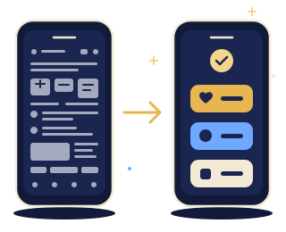
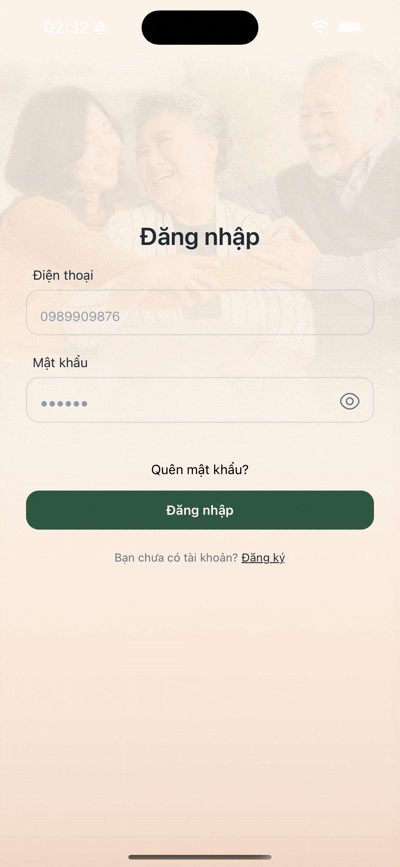
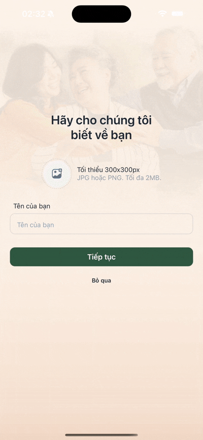
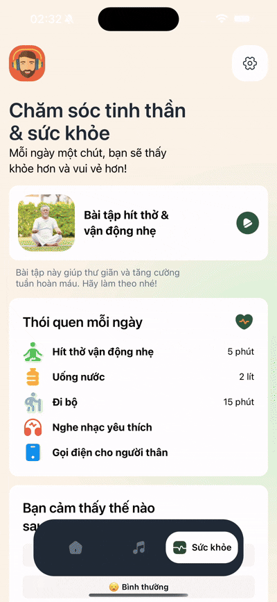
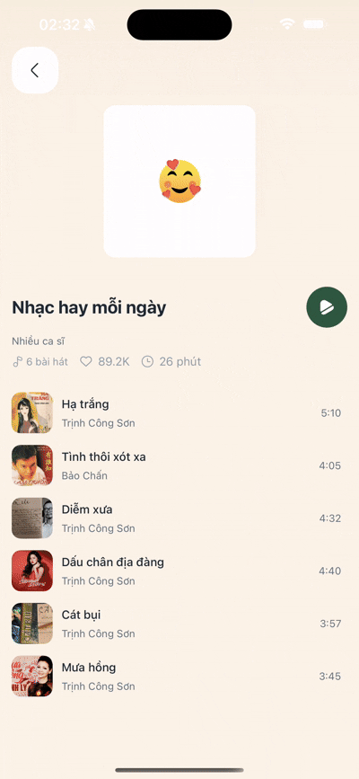

Golden Peace
An Tâm Tuổi Vàng, or "peace of mind in the golden years": a mobile app that helps older adults in Vietnam track their emotions, relax with music and meditation, and keep healthy daily habits.
- Role
- Owner & software developer
- Team
- 4 students
- Timeline
- May 2025 – present
- Built with
- React Native, Expo, TypeScript, Supabase, Figma
Who it’s for
Golden Peace is for people aged 60 and over, and for the family members and caregivers who want to support them. Many older adults feel lonely or anxious but don’t have an easy way to notice how their mood changes or to find calming, healthy activities. Most apps aren’t made for them: the text is small, the screens are crowded, and it isn’t clear what to tap next.
During our research, we found that older adults often struggled to use buttons and complete complex tasks. That made ease of use a central concern: someone should be able to find an activity and understand what to do next without working through a complicated sequence of screens.
We wanted to make a safe, positive place where older adults can share how they feel, find health information, and take part in activities that are good for them, all in one app, with large text and simple screens. The app is built with React Native (Expo) and uses Supabase for accounts and data.
My role
I’m the project’s owner and a software developer. I founded the team, four members from the AgeWell Tech Solutions Club, and ran our development in weekly sprint reviews. To decide what to build, we did on-site research, surveys and interviews with more than 120 older adults and healthcare staff at 4 senior care centers in Hanoi and Đà Nẵng. I designed the high-accessibility prototypes in Figma, and we completed the core modules for messaging, daily suggestions and personal activity recommendations.
Golden Peace is a team effort. My contribution connects the research and interface design with the development work: turning what we learned about older adults’ needs into screens and tasks we could build together.
From research to design
120+ older adults and care staff · 4 senior care centers · Hanoi and Đà Nẵng

The difficulty older adults had with buttons and complex tasks gave us a practical design priority: make each action easy to find and keep the path to it short. The interface uses large text, wide buttons and a small set of clearly labeled choices. Profile setup asks for a name and an optional photo, with a way to skip it, while the Relax screen groups activities into four large tiles. To evaluate these choices, I’d ask users to sign in, find a song and complete a daily check-in, then watch where they hesitate or need help.
A closer look
Select a screen to see it full size.


(opens full-size image)

(opens full-size image) (opens full-size image)
(opens full-size image)


(opens full-size image)Demo
A walk through the app, from the welcome screen to playing music.

What I learned designing for other people
My father said wealth and status meant little compared with watching his children grow up.
When I interviewed him, I began to understand what being there for someone could mean. I carried that question into Golden Peace. During our research, older adults struggled with buttons and complex tasks. A feature could sound useful to our team and still ask too much of the person trying to use it. Large controls, short setup and clear choices became ways to take that difficulty seriously.
The project has taught me to start with the person on the other side of the screen. I need to listen, notice where a task becomes confusing, and be willing to change what I’ve made. Revising my writing asks something similar of me. I know the connection between two ideas because I wrote them; a reader may need a clearer transition or a concrete detail. In both cases, my intention only goes so far. I have to make the next step easier to follow.
My father’s answer keeps bringing me back to the same purpose: do the work so I can be there for others.